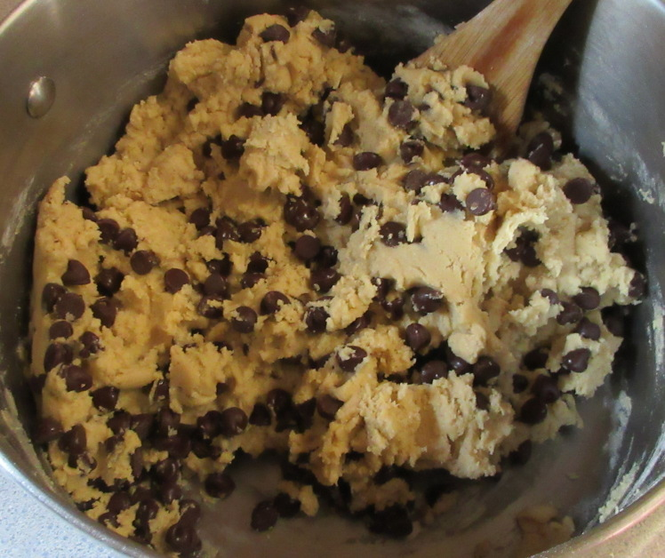
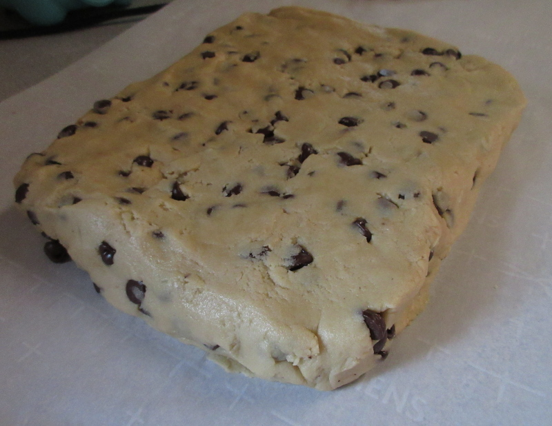
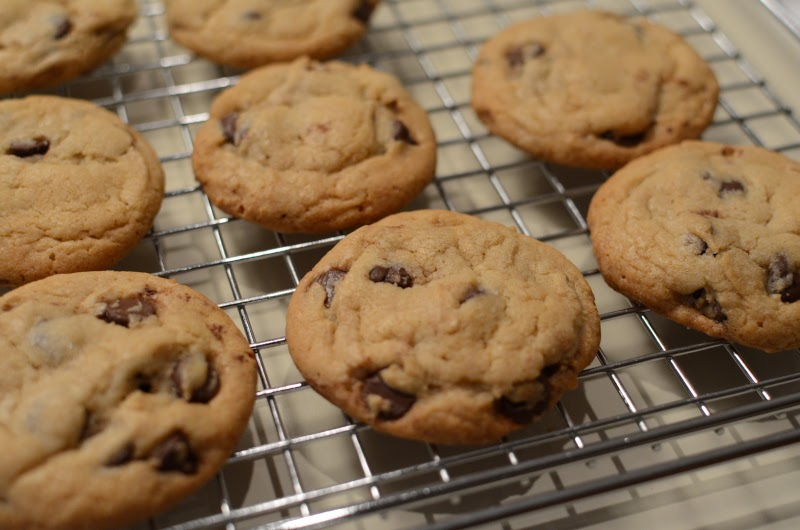

The type of chocolate you use in this recipe is really up to you. I prefer Nestle Tollhouse semi-sweet morsels. I also use a medium 1.5 inch cookie scoop tool to place the cookies onto the sheet for baking. Take note that making the cookie dough is only just the beginning. You must allow 36 hours of chilling time in the fridge. It will be tempting to bake them before then but it is imperative that you wait.
1.) You will need two mixing bowls to begin. One will have "wet" ingredients and the other will have "dry." Then they will be mixed together slowly to form the dough. If you have a mismatched size of bowls, let the larger be the "wet" one.
2.) Decide which bowl will be the "wet" ingredients bowl. This is the bowl we will be adding to right now. Measure your light brown sugar and place it in the bowl. Then measure the white sugar and dump it in.
3.) Place the butter into a microwavable bowl. If you are using sticks of butter just unwrap those and place them in. It is ideal to have fairly large chunks. Set this bowl into the microwave on a rather low heat setting for no more than 30 seconds. It is important that the butter is partly melted and sitting in it's own juice, but not completely liquified. Feel free to stop the microwave after 15 seconds, 20 seconds, 22 seconds, etc to be sure that the butter is at the proper stage to remove.
4.) Once the butter is sufficiently partly halfway melted, add it to the sugars and begin mixing. Mix until you get a pale and fluffy consistency.
5.) Add the vanilla extract and mix it in.
6.) Add each egg one at a time, mixing well after each addition.
7.) Put aside this "wet" bowl. Now we will be adding "dry" ingredients into the other bowl.
8.) Measure the plain flour and dump it in the bowl. Take note that the recipe calls for a subtraction of 2 tablespoons. Do that. Now measure out the bread flour and add that to the bowl.
9.) Add the baking soda, baking powder and sea salt. Gently shake the bowl to mix these ingredients.
10.) Now it is time to dump a portion of the dry ingredients into the wet ingredients and mix until evenly distributed. Continue adding small portions of dry, then mixing well, then adding a little more, then mixing more until all the dry ingredients have been combined with the wet. It should resemble dough at this point.
11.) Add the chocolate chips. I like to use 1 and a quarter 6oz bags of Nestle Tollhouse semi-sweet morsels. Fold the chocolate into the dough over and over until they are evenly dispersed.
12.) Lay out a sheet of parchment paper and drop the dough into the middle of it. Use your hands to form the dough into something like a 1-2 inch high rectangular brick.
13.) Fold the parchment paper over the dough and slide this into a large ziploc bag and seal it closed. Move the dough into the fridge and chill for a minimum of 24 hours and a maximum of 72. 36 hours is the ideal. It makes a big difference.
1.) I hope you waited. Preheat the oven to 350 degrees.
2.) For best results use a 1.5 inch scoop to place the dough in tablespoonfuls onto a parchment lined baking tray, leaving ample room for spreading.
3.) Sprinkle each ball with a pinch of sea salt.

4.) Bake for 9 minutes. The time at which you remove the cookies from the oven is extremely important. After the 9 minute mark we will check the progess of color and puffiness. If you preheated your oven, after 9 minutes the cookies ought to be soft, puffy and light in color but not quite golden brown. If the cookies are on track, bake for an additional 2-3 minutes, standing next to the oven checking after every minute passes.
5.) Remove the cookies from the oven when these conditions have been met:
6.) Remove cookies from the baking sheet onto a flat cool surface so that they can deflate and cool.
There are three critical moments in the making of these cookies. These cookies are meant to have a light crisp around the edges and a soft middle. So if you take special care around these three critical areas you may very well succeed.